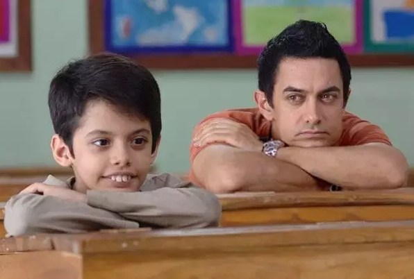
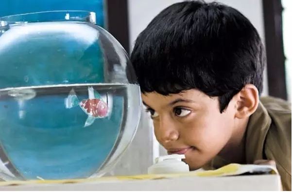
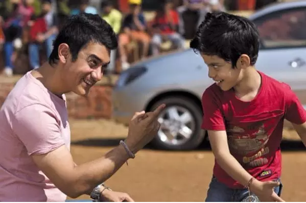
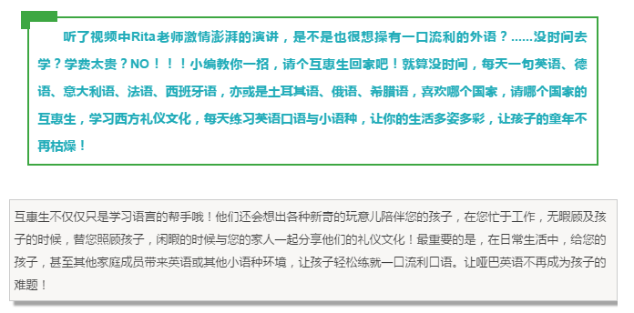

互惠动态
|
|
当了40年老师后，她说出了跟孩子交流的秘诀，赢得600万人点赞
在老师的教师生涯里，和孩子沟通，无疑是教学之外，最令老师关注，也最需要精力的重要工作。与孩子的交流沟通，真的是一门艺术。
就像德国哲学家雅思贝尔斯所说：教育意味着一棵树摇动一棵树，一朵云推动一朵云，一个灵魂唤醒一个灵魂。
Rita老师在台上，用她40年的教师智慧，带着黑人天然的节奏感、幽默感，分享了自己的教学经历。
也许，Rita老师与孩子交流的方式，正是教育的真谛之一。
在老师的教师生涯里，和孩子沟通，无疑是教学之外，最令老师关注，也最需要精力的重要工作。与孩子的交流沟通，真的是一门艺术。
就像德国哲学家雅思贝尔斯所说：教育意味着一棵树摇动一棵树，一朵云推动一朵云，一个灵魂唤醒一个灵魂。
Rita老师在台上，用她40年的教师智慧，带着黑人天然的节奏感、幽默感，分享了自己的教学经历。
也许，Rita老师与孩子交流的方式，正是教育的真谛之一。
中文翻译：
我这辈子，要么是在学校，要么是在去学校的路上，要么是在讨论学校发生了什么事。
我的父母是教育从业者，外祖父母也都是搞教育的，在过去40年，我也在从事同样的事业。所以在过去的这些年里，我有机会从各个角度审视教育。
我们知道孩子们为什么掉队、辍学或学不进去，无非就是贫穷、低出席率和同龄人的坏影响吧。
但是，我们极少讨论一样东西的价值和重要性。
人和人之间的联系（relationship）
美国著名儿童精神科医师James Comer曾说过：没有强有力的关系，学习就不会有显著的进步。
另一位教育学家George Washington Carver也说过类似的话：学习，就是理解各种关系。
我相信各位都懂这两句话，因为每个人在童年都曾被一位老师或一个成年人影响过。

在老师的教师生涯里，和孩子沟通，无疑是教学之外，最令老师关注，也最需要精力的重要工作。与孩子的交流沟通，真的是一门艺术。
就像德国哲学家雅思贝尔斯所说：教育意味着一棵树摇动一棵树，一朵云推动一朵云，一个灵魂唤醒一个灵魂。
Rita老师在台上，用她40年的教师智慧，带着黑人天然的节奏感、幽默感，分享了自己的教学经历。
也许，Rita老师与孩子交流的方式，正是教育的真谛之一。
这么多年来，我一直都在看人们怎么教育孩子。我见过最好的教育方式，也见过最差的。
有一次，我的一个同事跟我说，“我的职责不是去喜欢那些孩子们，而是教书。我管教课，他们管学习，就是这么个理儿。”
然后我就跟她说，“但是，孩子们可不愿意跟他们讨厌的人学习啊！”
她接着说，“一派胡言。”
然后我对她说，“那么亲爱的，你这一年的工作会变得十分漫长和痛苦。”
事实也果真如此。
有些人认为，一个人可以平白无故和孩子们建立起关系，或者可以不具有这种能力就去教育孩子们。
但我更赞同教育家Stephen Covey的观点，他说教育孩子不难，你只需要做一些简单的事情。比如说，试着首先理解他人而不是想被理解，又比如说：
道歉
你想过吗？
跟一个孩子说你很对不起，绝对会让他们都惊呆了。
在老师的教师生涯里，和孩子沟通，无疑是教学之外，最令老师关注，也最需要精力的重要工作。与孩子的交流沟通，真的是一门艺术。
就像德国哲学家雅思贝尔斯所说：教育意味着一棵树摇动一棵树，一朵云推动一朵云，一个灵魂唤醒一个灵魂。
Rita老师在台上，用她40年的教师智慧，带着黑人天然的节奏感、幽默感，分享了自己的教学经历。
也许，Rita老师与孩子交流的方式，正是教育的真谛之一。
有一次，我在课上讲比例，可是我的数学又不是很好。下课后我重新去翻看了教师用书，发现我完全教错了。
所以，第二天我回到班上说：“同学们，我要道歉，因为我昨天的课都教错了。我非常抱歉。”
他们说，“没关系，Pierson老师。你当时教得很投入，我们就让你继续了。”
我也曾经教过全是熊孩子的班级，他们的基础差到我都哭了。
当时我就想，我该怎么才能在9个月内把这些孩子提升到他们必须具备的水平？
这真的很难，太艰难了——我究竟该怎么才能让一个孩子重拾自信，并让他在学术上也有进步？
对此，我后来有一个非常好的主意。
我告诉这帮熊孩子们： “你们进了我的班级，是因为我是最好的老师，而你们也是最好的学生。学校把我们放在一起，是为了来给其他人做个好榜样。”
一个超级熊孩子简直不敢相信地说：“真的吗？！”
我说：“当然是真的！我们要给其他班级做个榜样——当我们走在楼道里时，大家都会注意到我们，所以我们不能吵闹，而且要昂首阔步。”
当时，我还给了他们一个口号：
“我是个人物！我来的时候是个人物，毕业后会变成一个更好的人物。我很有力、很强大，我值得在这里受教育。我有很多事情要做，让人们记住我，去世界上的很多地方。”
然后他们说：“是啊！”
如果你长时间地这么说，那这些话就会开始变成事实。
所以，我做了一个有20道题的小测试，其中有个孩子错了18道。
不过，我在他了卷子上写了个“＋2”和一个大的笑脸。
他说：“Pierson老师，这是不及格吗？”
我说：“是的。”
他接着说：“那你干嘛给我一个笑脸？”
我说：“因为你正在慢慢进步。你没有全错，还对了两个！下次我们再考这些题的时候，难道你不会做得更好吗？”
他说：“会的，老师！我可以做得更好！”
大家看，“－18”让人感觉想死，但“＋2”就意味着“我没有那么糟。”
在老师的教师生涯里，和孩子沟通，无疑是教学之外，最令老师关注，也最需要精力的重要工作。与孩子的交流沟通，真的是一门艺术。
就像德国哲学家雅思贝尔斯所说：教育意味着一棵树摇动一棵树，一朵云推动一朵云，一个灵魂唤醒一个灵魂。
Rita老师在台上，用她40年的教师智慧，带着黑人天然的节奏感、幽默感，分享了自己的教学经历。
也许，Rita老师与孩子交流的方式，正是教育的真谛之一。
好多年了，我妈妈利用课间休息时间批改作业，下午去家访。她还买了花生酱和饼干、梳子和刷子，以及毛巾和肥皂，把它们放在教室的抽屉里，以防有孩子会需要。
是的，教那些无法洗澡身体散发臭味的孩子是一件很困难的事，而且这些孩子们有时也是比较“残忍”的。
但是，我妈妈还是坚持把那些必需品都放在她的抽屉里。
过了很多年，在她退休以后，我看到一些当年的孩子们回来告诉她：
“您知道，Walker老师，是您改变了我的生活，是您让它变得有意义。您让我觉得我是个人物，虽说我内心里知道我并不是。但我就是想让您看看，我现在成了一个什么样的人物。”
两年前，我妈妈以92岁高龄去世，有很多以前的学生来参加了葬礼。当时我就哭了——
不是因为她走了，而是因为她留下了这些永远不会消失的关系。
也许你会问，你会喜欢你所有的学生吗？
当然不——而且你也知道，那些最难搞的熊孩子，往往不会在课上缺席！永远不会！
但你要知道，最难搞的那几个熊孩子出现在这里也是有理由的——这就是你和他们之间的关系。
你可以不喜欢他们，但关键的是要让他们永远不知道这一点。
所以，伟大的老师总是伟大的演员。
我们得强迫自己工作，得听从那些毫无道理的政策——无论他们多么讨厌，我们总得去上课，因为这是我们的责任。
在老师的教师生涯里，和孩子沟通，无疑是教学之外，最令老师关注，也最需要精力的重要工作。与孩子的交流沟通，真的是一门艺术。
就像德国哲学家雅思贝尔斯所说：教育意味着一棵树摇动一棵树，一朵云推动一朵云，一个灵魂唤醒一个灵魂。
Rita老师在台上，用她40年的教师智慧，带着黑人天然的节奏感、幽默感，分享了自己的教学经历。
也许，Rita老师与孩子交流的方式，正是教育的真谛之一。
不过，教育和学习总归是件让人愉快的事情。
你想想，如果我们的孩子都不害怕接受挑战，不害怕思考，都赢得了一个冠军，那我们的世界会变得多么强大？
只要一个成年人永远不放弃他们，懂得关系的强大力量，并坚信他们可以变成那个最好的自己——那么，每个孩子都可以成为一个冠军。
这个职业很艰巨不？
当然咯，我的上帝，这毫无疑问。
但是，这不是不可能的——因为我们是教育家，我们是更成熟的成年人——
我们，天生就是来重塑和鼓励他人的。
 

在老师的教师生涯里，和孩子沟通，无疑是教学之外，最令老师关注，也最需要精力的重要工作。与孩子的交流沟通，真的是一门艺术。
就像德国哲学家雅思贝尔斯所说：教育意味着一棵树摇动一棵树，一朵云推动一朵云，一个灵魂唤醒一个灵魂。
Rita老师在台上，用她40年的教师智慧，带着黑人天然的节奏感、幽默感，分享了自己的教学经历。
也许，Rita老师与孩子交流的方式，正是教育的真谛之一。